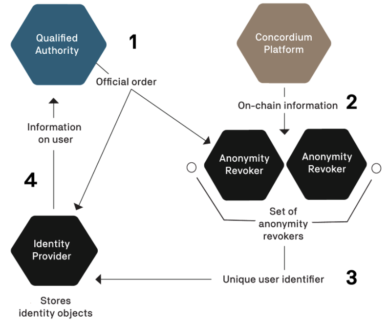

Revoking anonymity#
The identity of a user can only be revealed to a qualified authority as part of a valid legal process. A qualified authority is a governmental body that has authority to act in a relevant jurisdiction. For example, a local police force, a local court or an investigatory division of a local authority that regulates financial conduct will all have authority to act in their jurisdictions. These authorities are qualified to begin the process of revoking the anonymity of a user when they proceed through established legal channels and make a formal request. The outcome of such a request is likely to be that a qualified authority obtains an official order, which may be in the form of a warrant, court order, or similar instrument. Only after a qualified authority validly serves an official order upon the relevant anonymity revokers and identity provider can the real-world identity of a user be revealed and only to the extent set out in the order.
When legally obliged, the anonymity revokers and identity provider work together to determine the owner of an account and determine which accounts belong to the same owner. Anonymity revocation is a multi-stage process requiring cooperation of multiple parties.
Each account has an encryption of a specific user identifier. This number can be decrypted by a sufficient number of the anonymity revokers working together. The set of anonymity revokers and the number of them required to decrypt the user identifier are determined when the identity is issued.
After the authorities have identified an on-chain transaction or account they would like to investigate, in order to reveal the real-world identity of a user, the following process must be followed:
The qualified authority must identify the anonymity revokers and identity provider associated with the account they would like to deanonymize and present them with an official order.
Per the terms of the official order, the anonymity revokers inspect and decrypt the available on-chain data for the user.
The anonymity revokers extract the unique user identifier from the collected data.
With this unique user identifier, the qualified authority can work with the relevant identity provider to retrieve the real-world identity of the user. The anonymity revokers can also decrypt a value that is held by the identity provider and allows the revokers to find all accounts the user has created from a given identity. Additionally, this value allows anonymity revokers to see the amount of CCDs in the shielded balance of deanonymized accounts.
All of these actions are subject to rules and processes, and only the relevant entities learn any information about the account owner. No information is publicly revealed.
 Copyright 2021 - 2023, Concordium Software ApS
Copyright 2021 - 2023, Concordium Software ApS